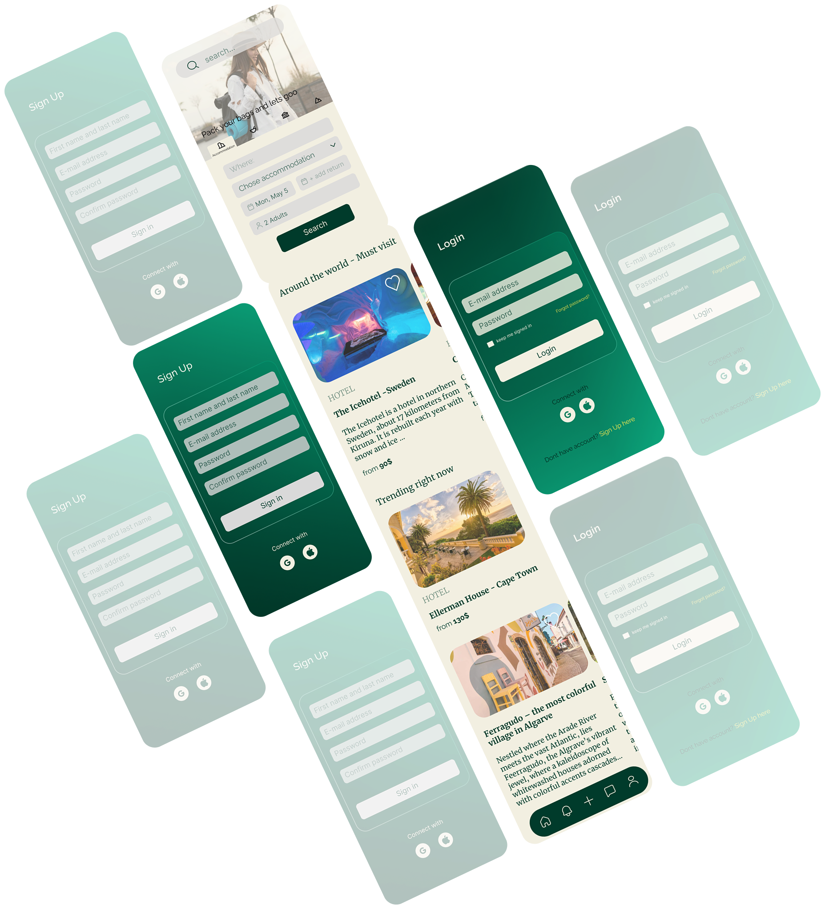
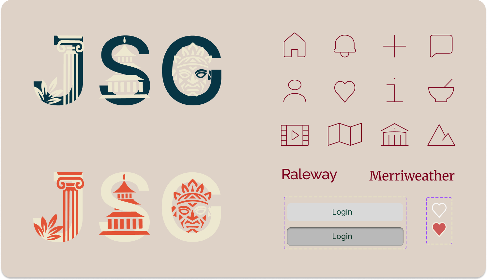
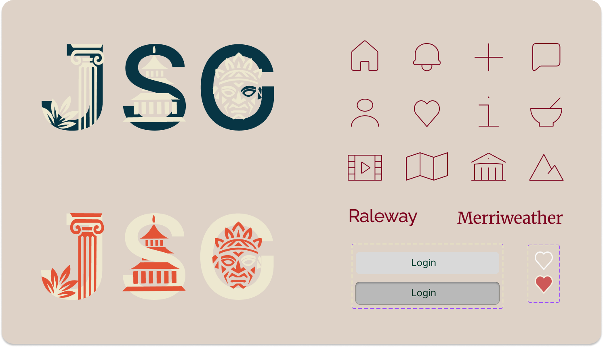

Jet Set Go
mobile design
ux/ui research
branding
Overview
Jet Set Go - travel planning app with focus on authentic places rich in traditions and local culture. This project` s core mission is connecting adventurous and culturally curious people in one big community, encouraging them to share their travel stories with others and inspire them.
 Click to view moreThe Problem
- Planning a trip today often feels more overwhelming than exciting with countless apps, websites, and blogs that offer conflicting or repetitive information, making it hard to know what’s truly worth visiting.
- Beyond that, there is deeper struggle to find authentic places rich in local traditions and culture. Most platforms surface the same over-touristed landmarks and generic experiences.
- Travelers crave a space where they can connect with others who value culture, tradition, and deeper experiences—not just photo ops.
- Users juggle different apps for maps, lists, bookings, journaling, and reviews.
- There’s no single space that unites discovery, inspiration, planning, and community.
The Solution
- The app encourages respect for local culture through educational tidbits, local voices, and ethical travel tips.
- The app highlights hidden gems, tradition-rooted locations, and local stories rather than just trending tourist spots.
- Travelers can share their experiences, stories, and cultural insights, building a dynamic library of journeys that inspire others.
- Instead of digging through endless search results, Jet Set Go offers tailored recommendations based on interests (e.g., folklore, food traditions, artisanal crafts, local festivals).
- The tone is welcoming, adventurous, and curious—making users feel like part of a movement, not just a transaction.
The Process
 
